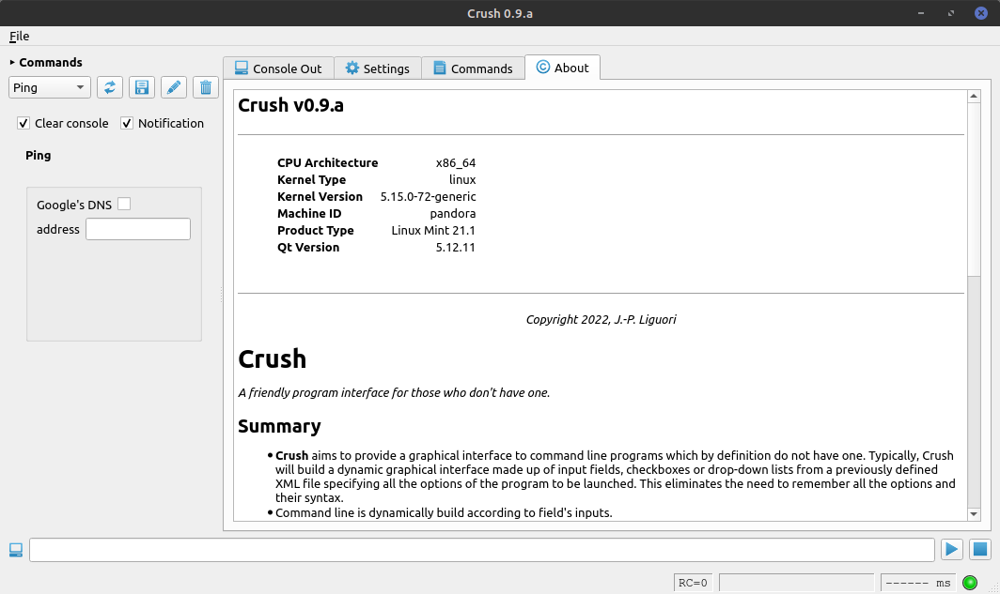
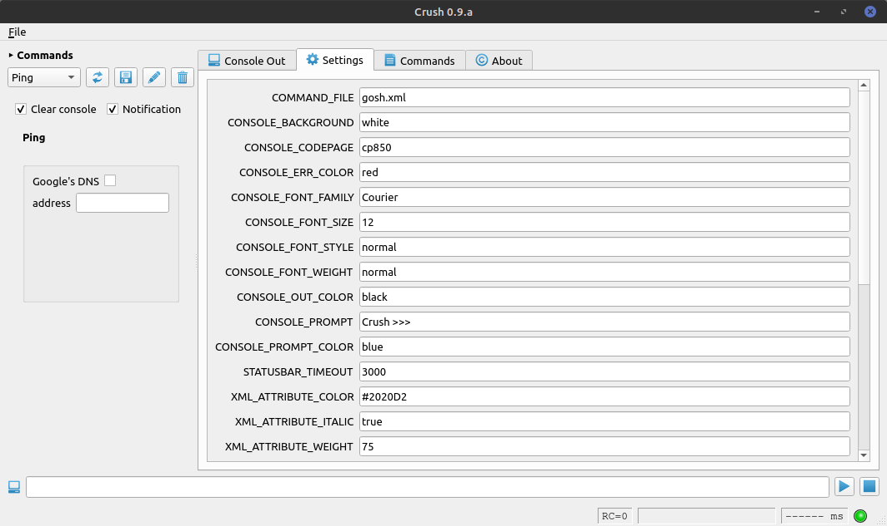
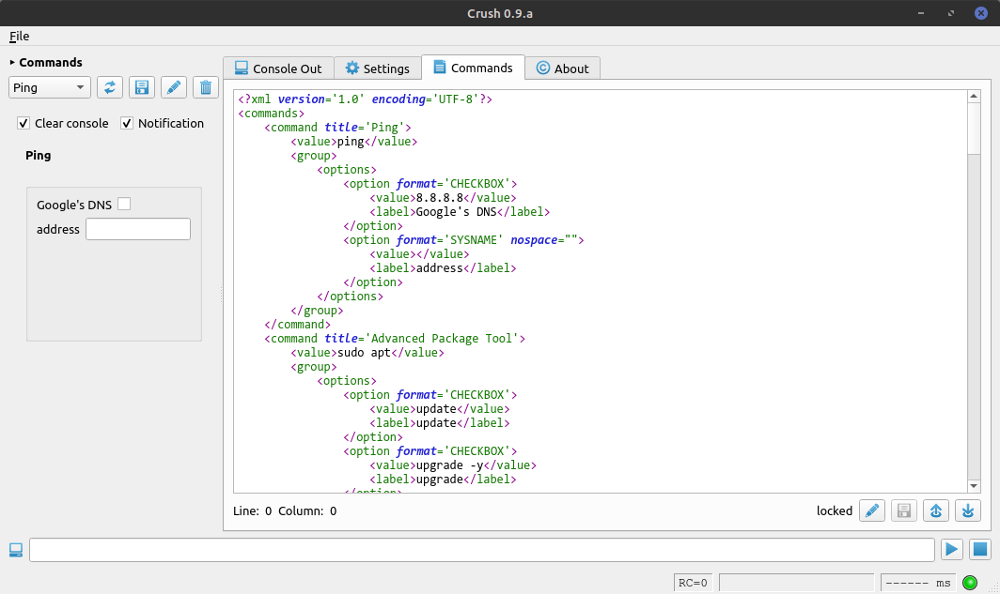
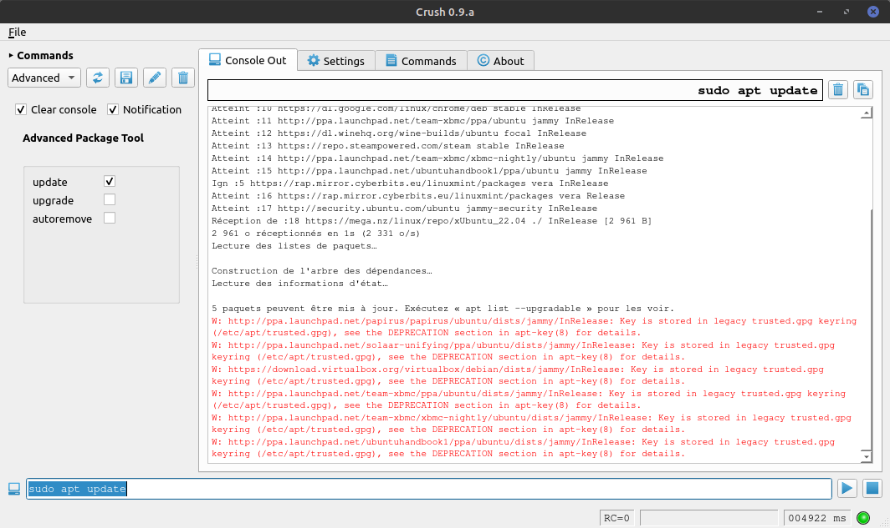

Crush
A friendly program interface for those who don't have one.
Summary
- Crush aims to provide a graphical interface to command line programs which by definition do not have one. Typically, Crush will build a dynamic graphical interface made up of input fields, checkboxes or drop-down lists from a previously defined XML file specifying all the options of the program to be launched. This eliminates the need to remember all the options and their syntax.
- Command line is dynamically build according to field's inputs.
- Command line is then available for running and its output is displayed into the pseudo-terminal in real time.
- The XML file needed to represent the commands can be edited in the interface, and its content is directly reflected in the list of available commands.
Built with
Authors
License
- This project is licensed under the GNU General Public License.
- See the LICENSE.md file for details.
Features
- Available for Windows and Linux systems.
- Convivial user interface with tooltips.
- Pseudo-terminal for running commands and output viewing in real time.
- Notification available upon running completion.
- Customizable GUI colors.
Requirements
Screenshots
- About Tab

- Settings Tab

- Commands Tab

- Console Output Tab

Todo
- Dark theme.
- Running commands into an external terminal.
- XML syntax description.